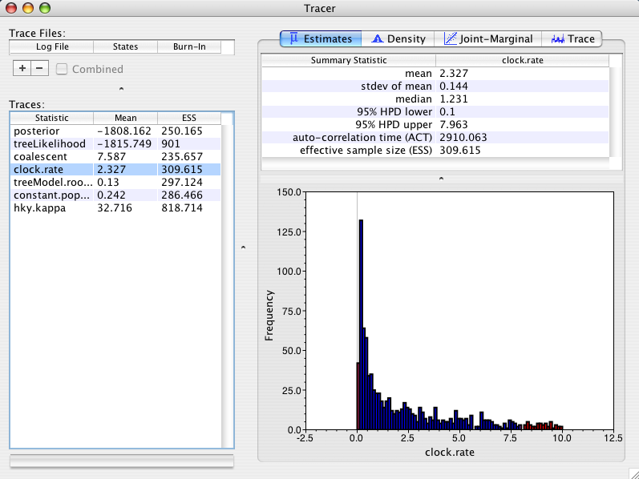
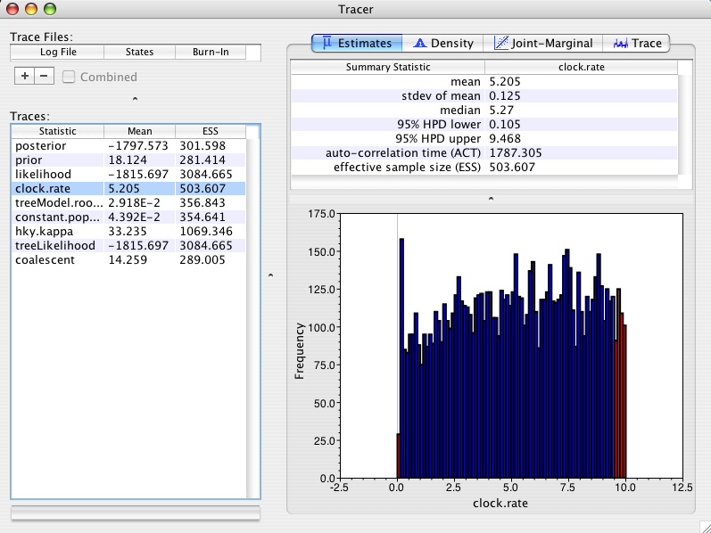
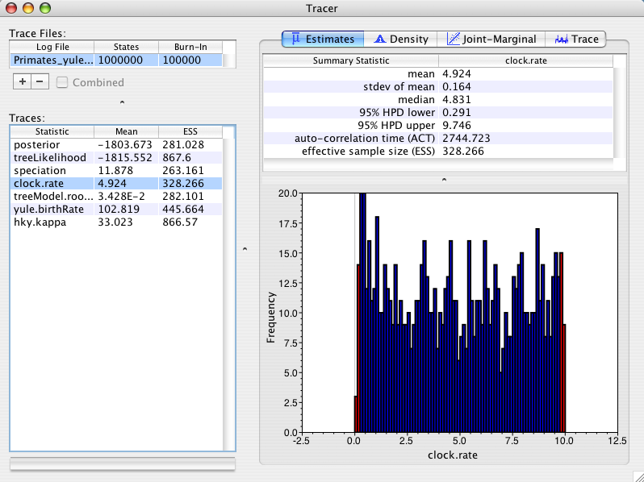

Contents
Bayesian phylogenetic inference is a complicated affair. Throw in some calibrations or rate priors and things can get nasty if you aren’t careful. On this page I do a quick survey of some of the tree priors available in BEAST and how they might influence estimation of dates (and therefore rates) when used in common ways.
For the illustrative purposes of this example I am going to use a small data set of Primates (Primates.nex) that is available with the distribution of BEAST. For each tree prior we will do a Bayesian analysis and we will calibrate the divergence times of the tree by providing a uniform prior distribution (0.1-10) on the overall rate of evolution (clock.rate parameter). This prior distribution has a mean of 5.05. In general I thoroughly dislike uniform priors as they are usually poor descriptors of our prior knowledge. However in this case a uniform distribution will be used to reveal if the tree prior is having any unforeseen influence on the rate prior. As all the sequences were sampled from the same time the data should provide no information about the rate of evolution so we might expect the posterior distribution of rate to simply recover the prior we are using.
For the first run I will use a coalescent tree prior that assumes a (*unknown*) constant population size back through time. This tree prior is most suitable for trees describing the relationships between individuals in the same population/species. This prior has a parameter (constant.popSize) that will be sampled by MCMC. As the parameter is also part of the MCMC state it must also have a prior distribution specified for it. The default prior distribution is uniform with a very high upper bound. In this setting the posterior distribution of the rate looks like:

As you can see the posterior mean is 2.3 +/- 0.144, whereas the prior mean rate was 5.05. Why did the tree prior have an effect on the rate estimate? The answer is a little bit complex but in simple terms, a constant size coalescent prior (with uniform prior on constant.popSize) prefers large trees. It prefers large trees because when the constant.popSize parameter is big, the coalescent prior prefers large trees and since the prior on constant.popSize is uniform with a very high bound, the constant.popSize can become big. The model can achieve big trees without altering the branch lengths (in terms of amount of genetic change) by reducing the evolutionary rate accordingly. So consequently this tree prior prefers lower rates. This effect is described in the original paper on the MCMC methodology underlying BEAST (Drummond et al, 2002) and it is easy to fix. All we need to do is change the prior on constant.popSize to stop it from prefering large trees.
It turns out that a very natural prior for the constant.popSize parameter is the Jeffreys prior (see Drummond et al, 2002 for why it is natural and some simulations that demonstrate it). Here is the posterior distribution of the rate when using a Jeffreys prior on the constant.popSize parameter in the Primates example:

As you can see the posterior mean is 5.2 +/- 0.125 and the distribution looks quite uniform (if I ran it longer it would look even better). Recall that the prior mean rate was 5.05. In other words, there is no significant difference between the marginal posterior distribution on rate and the marginal prior distribution. As we expect the posterior just reflects the prior. This is much nicer behaviour. Moral of the story: use the Jeffreys prior when using the constant-size coalescent (unless you have an informative prior distribution on the constant.popSize). Later versions of BEAST will probably have the Jeffreys prior as the default option for this parameter.
For the third run I will use a Yule tree prior that assumes a (unknown) constant lineage birth rate for each branch in the tree. This tree prior is most suitable for trees describing the relationships between individuals from different species. The yule prior parameter (yule.birthRate) is often thought of as describing the net rate of speciation. This prior parameter (yule.birthRate) will be sampled by MCMC. As the parameter is also part of the MCMC state it must also have a prior distribution specified for it. The default prior distribution is uniform. Using this tree prior the posterior distribution of the rate looks like:

As you can see the posterior mean is 4.9 +/- 0.16. This is not significantly different from our prior distribution and thus is behaving nicely the way we expect it to.
So why is the uniform prior on yule.birthRate working the way we expect when the uniform prior on constant.popSize was not? The answer lies in the way in which the different models are parameterized. If the coalescent prior had been parameterized with a parameter that was equal to 1/constant.popSize, then a uniform prior would have behaved nicely (in effect the Jeffreys prior is performing this re-parameterization). Conversely if the Yule tree model had been parameterized with a parameter equal to 1/yule.birthRate (which would represent the mean branch length) it would have behaved *badly* in a similar way to coalescent prior with a uniform prior on constant.popSize.
And before you starting thinking that we parameterized the coalescent prior incorrectly – there is no correct parameterization for all questions. For some hypotheses one prior distribution is correct, for others another prior distribution works better. The important thing is to understand how your individual marginal priors interact with each other. If you are doing divergence time dating and rate estimation then you should be aware that the tree prior has the potential to influence the rate estimates and vice versa.
Finally, if you have nice prior distributions on divergence times and rates (like normal or lognormal distributions) then most of these effects become small.